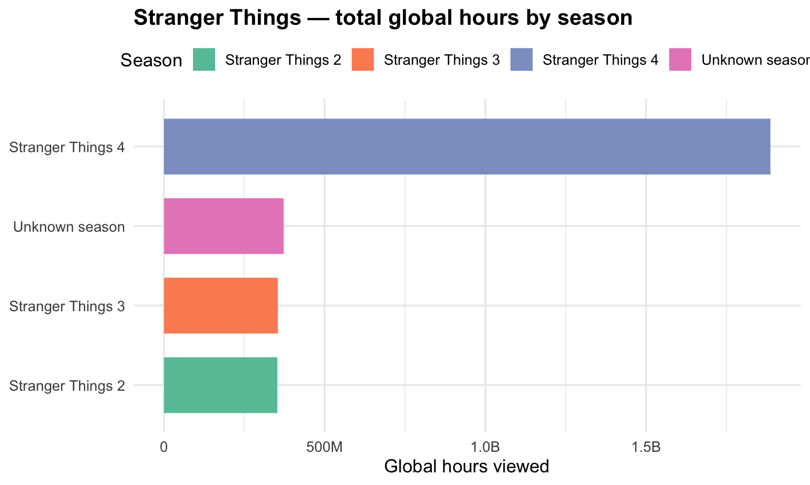
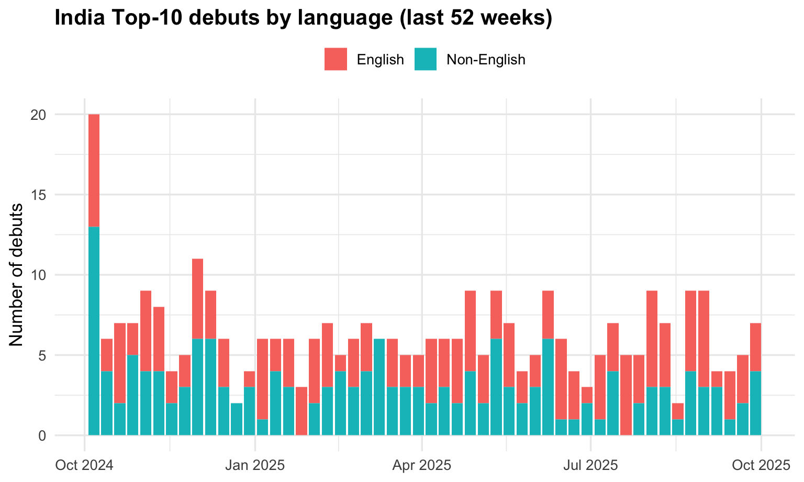
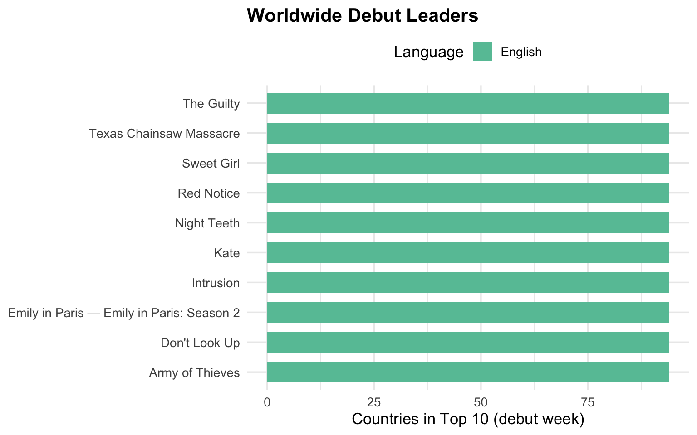

For this project, we will deal with two separate data files, taken from Netflix’s TuDum Top 10. These are:
Global Top 10
Country-wide Top 10
The following code will download the Netflix data and create TSV³ files in a data/mp01 directory. If this doesn’t work for whatever reason, you can download the data directly from Netflix, though you will need to make sure you are getting the right files and storing them in a location and format suitable for this mini-project.
── Column specification ────────────────────────────────────────────────────────
Delimiter: "\t"
chr (3): category, show_title, season_title
dbl (5): weekly_rank, weekly_hours_viewed, runtime, weekly_views, cumulativ...
date (1): week
ℹ Use `spec()` to retrieve the full column specification for this data.
ℹ Specify the column types or set `show_col_types = FALSE` to quiet this message.
Code
# Task 2: Fix "N/A" values in season_title for GLOBAL_TOP_10GLOBAL_TOP_10 <- GLOBAL_TOP_10 |>mutate(season_title =if_else(season_title =="N/A", NA, season_title),runtime_minutes =round(60* runtime))# Task 3: Import per-country dataset, automatically treating "N/A" as NACOUNTRY_TOP_10 <-read_tsv(COUNTRY_TOP_10_FILENAME, na ="N/A")
Rows: 413620 Columns: 8
── Column specification ────────────────────────────────────────────────────────
Delimiter: "\t"
chr (5): country_name, country_iso2, category, show_title, season_title
dbl (2): weekly_rank, cumulative_weeks_in_top_10
date (1): week
ℹ Use `spec()` to retrieve the full column specification for this data.
ℹ Specify the column types or set `show_col_types = FALSE` to quiet this message.
Answer: Netflix appears in 94 distinct countries, based on countries that have ever reported viewing in the dataset.
Q2:Which non-English-language film has spent the most cumulative weeks in the global top 10? How many weeks did it spend?
Code
# Non-English film with the most cumulative weeks in the GLOBAL Top 10library(dplyr)nonenglish_weeks <- GLOBAL_TOP_10 %>%filter(category =="Films (Non-English)") %>%group_by(show_title) %>%summarise(total_weeks =n_distinct(week), .groups ="drop") %>%arrange(desc(total_weeks), show_title)top_nonenglish <-slice_head(nonenglish_weeks, n =1)# (Optional) peek resulttop_nonenglish
# A tibble: 1 × 2
show_title total_weeks
<chr> <int>
1 All Quiet on the Western Front 23
Answer:The non-English-language film with the most cumulative weeks in the global Top 10 is All Quiet on the Western Front, with 23 weeks.
Q3:What is the longest film (English or non-English) to have ever appeared in the Netflix global Top 10? How long is it in minutes?
Code
# Longest film (English or Non-English) ever in the GLOBAL Top 10longest <- GLOBAL_TOP_10 |> dplyr::filter(grepl("^Films", category), !is.na(runtime)) |> dplyr::mutate(runtime_minutes =round(60* runtime)) |> dplyr::group_by(show_title) |> dplyr::summarise(runtime_minutes =max(runtime_minutes), .groups ="drop") |> dplyr::slice_max(runtime_minutes, n =1, with_ties =FALSE)longest_film_title <- longest$show_titlelongest_film_minutes <- longest$runtime_minuteslongest_film_title
[1] "Pushpa 2: The Rule (Reloaded Version)"
Code
longest_film_minutes
[1] 224
Answer: The longest film to appear in the global Top 10 is Pushpa 2: The Rule (Reloaded Version), with a runtime of 224 minutes.
Q4:For each of the four categories, what program has the most total hours of global viewership?
Code
library(dplyr); library(DT); library(scales)
Attaching package: 'scales'
The following object is masked from 'package:readr':
col_factor
Code
q4 <- GLOBAL_TOP_10 |>mutate(program =if_else(is.na(season_title) | season_title =="N/A", show_title, paste(show_title, "—", season_title))) |>group_by(category, program) |>summarise(total_hours =sum(weekly_hours_viewed, na.rm =TRUE), .groups ="drop") |>group_by(category) |>slice_max(total_hours, n =1, with_ties =FALSE) |>ungroup() |>mutate(total_hours = scales::number(total_hours, accuracy =1, big.mark =",")) |>arrange(category)DT::datatable(q4, rownames =FALSE,options =list(pageLength =4, dom ="t"),caption ="Top program by total global viewing hours in each category")
Q5:Which TV show had the longest run in a country’s Top 10? How long was this run and in what country did it occur?
Answer:The longest run was Pablo Escobar, el patrón del mal — Pablo Escobar, el patrón del mal: Season 1, with 102 consecutive weeks in Colombia (from r q5_start to r q5_end).
Q6:Netflix provides over 200 weeks of service history for all but one country in our data set. Which country is this and when did Netflix cease operations in that country?
Code
library(dplyr); library(DT)# standardize country columnCOUNTRY_TOP_10 <- COUNTRY_TOP_10 |>rename(country =any_of(c("country","country_name")))# country with the shortest service-history windowq6_row <- COUNTRY_TOP_10 |>group_by(country) |>summarise(total_weeks =n_distinct(week),last_week =max(week),.groups ="drop" ) |>arrange(total_weeks, country) |>slice(1)# scalars for inline textq6_country <- q6_row$countryq6_last_week <- q6_row$last_weekq6_total_weeks <- q6_row$total_weeks# small 1-row tableDT::datatable( q6_row, rownames =FALSE,caption ="Country with the shortest service history (and last recorded week)",options =list(pageLength =1, dom ="t"))
Answer: The country is Russia, and Netflix’s last recorded week there was 2022-02-27 (a total of 35 weeks of history).
Q7:What is the total viewership of the TV show Squid Game? Note that there are three seasons total and we are looking for the total number of hours watched across all seasons.
Code
library(dplyr); library(DT)# Sum hours for Squid Game (exclude "Squid Game: The Challenge")squid_by_season <- GLOBAL_TOP_10 |>filter(grepl("^TV", category),grepl("^Squid Game(?!: The Challenge)", show_title, perl =TRUE)) |>group_by(show_title, season_title) |>summarise(hours =sum(weekly_hours_viewed, na.rm =TRUE), .groups ="drop") |>arrange(season_title)squid_total_hours <-sum(squid_by_season$hours, na.rm =TRUE)
Code
DT::datatable( squid_by_season |>mutate(hours = scales::comma(hours)),rownames =FALSE,caption ="Squid Game — total global viewing hours by season",options =list(pageLength =10, dom ="t"))
Answer: The total global viewing time for Squid Game across all seasons is 5,048,300,000 hours.
Q8:The movie Red Notice has a runtime of 1 hour and 58 minutes. Approximately how many views did it receive in 2021? Note that Netflix does not provide the weekly_views values that far back in the past, but you can compute it yourself using the total view time and the runtime.
Code
library(dplyr)suppressPackageStartupMessages(library(lubridate))# Runtime: 1 hour 58 minutes = 1.9667 hoursruntime_hours <-1+58/60# Total global watch-hours for Red Notice in 2021red_2021_hours <- GLOBAL_TOP_10 |>filter(show_title =="Red Notice", year(week) ==2021) |>summarise(total_hours =sum(weekly_hours_viewed, na.rm =TRUE), .groups ="drop") |>pull(total_hours)# Approximate views = total_hours / runtimered_2021_views <- red_2021_hours / runtime_hours# Formatted values for inline prosered_2021_hours_fmt <- scales::comma(red_2021_hours)red_2021_views_fmt <- scales::comma(round(red_2021_views))
Answer: In 2021, Red Notice accumulated 396,740,000 hours of viewing.
Dividing by its 118-minute runtime (~1.9667 hours) gives approximately 201,732,203 views.
Q9:How many Films reached Number 1 in the US but did not originally debut there? That is, find films that first appeared on the Top 10 chart at, e.g., Number 4 but then became more popular and eventually hit Number 1? What is the most recent film to pull this off?
Code
library(dplyr); library(DT)# Ensure the country column name is standardizedCOUNTRY_TOP_10 <- COUNTRY_TOP_10 |>rename(country =any_of(c("country","country_name")))# US films only (English & Non-English)us_films <- COUNTRY_TOP_10 |>filter(country =="United States", grepl("^Films", category)) |>arrange(show_title, week)# Per-film debut, peak, and first week at #1us_summary <- us_films |>group_by(show_title) |>summarise(debut_week =min(week),debut_rank = weekly_rank[which.min(week)],best_rank =min(weekly_rank),first_week_at_1 =if (any(weekly_rank ==1)) min(week[weekly_rank ==1]) elseas.Date(NA),.groups ="drop" )# Films that debuted below #1 but later reached #1later_num1 <- us_summary |>filter(debut_rank >1, best_rank ==1) |>arrange(desc(first_week_at_1))n_later_num1 <-nrow(later_num1)most_recent_title <- later_num1$show_title[1]most_recent_date <- later_num1$first_week_at_1[1]# (Optional) small tableDT::datatable( later_num1 |>select(show_title, debut_week, debut_rank, first_week_at_1),rownames =FALSE,caption ="Films that debuted below #1 in the US but later reached #1 (most recent first)",options =list(pageLength =10, dom ="t"))
Answer: In total, 45 films reached #1 in the US after debuting below #1.
The most recent was Unknown Number: The High School Catfish, first hitting #1 on 2025-09-07.
Q10:Which TV show/season hit the top 10 in the most countries in its debut week? In how many countries did it chart?
Code
library(dplyr)# Standardize country column; TV onlytv_ctry <- COUNTRY_TOP_10 |>rename(country =any_of(c("country","country_name"))) |>filter(grepl("^TV", category))# Debut week for each show/seasontv_debuts <- tv_ctry |>group_by(show_title, season_title) |>summarise(debut_week =min(week), .groups ="drop")# Countries where each show/season charted in that debut weektv_debut_spread <- tv_ctry |>inner_join(tv_debuts, by =c("show_title","season_title")) |>filter(week == debut_week) |>group_by(show_title, season_title, debut_week) |>summarise(num_countries =n_distinct(country), .groups ="drop") |>arrange(desc(num_countries), debut_week, show_title, season_title)# Top result (break ties by earliest debut)q10_top <- tv_debut_spread |>slice(1)# Inline helpersq10_title <- q10_top$show_titleq10_season <-ifelse(is.na(q10_top$season_title), "N/A", q10_top$season_title)q10_countries <- q10_top$num_countriesq10_week <- q10_top$debut_week
(Optional) quick table:
Code
DT::datatable(tv_debut_spread |>head(25),rownames =FALSE,caption ="Top TV debuts by number of countries (first 25)",options =list(pageLength =25, dom ="t"))
Answer: The widest debut was Emily in Paris — Emily in Paris: Season 2, which hit the Top 10 in 94 countries during the week of 2021-12-26.
Press Release 1: Upcoming Season of Stranger Things
Code
library(dplyr)library(scales)# 1) Global totals for Stranger Things (all seasons)st_global <- GLOBAL_TOP_10 |>filter(grepl("^TV", category), show_title =="Stranger Things")st_total_hours <-sum(st_global$weekly_hours_viewed, na.rm =TRUE)st_total_weeks <- dplyr::n_distinct(st_global$week)st_total_hours_fmt <- scales::comma(st_total_hours)# 2) Countries where Stranger Things (any season) chartedCOUNTRY_TOP_10 <- COUNTRY_TOP_10 |>rename(country =any_of(c("country","country_name")))st_country_count <- COUNTRY_TOP_10 |>filter(grepl("^TV", category), show_title =="Stranger Things") |>summarise(n_countries = dplyr::n_distinct(country), .groups ="drop") |>pull(n_countries)# 3) Rank within TV (English) by total global hours (all-time)tv_eng_rank <- GLOBAL_TOP_10 |>filter(category =="TV (English)") |>group_by(show_title) |>summarise(total_hours =sum(weekly_hours_viewed, na.rm =TRUE), .groups ="drop") |>arrange(desc(total_hours)) |>mutate(rank =row_number())st_rank <- tv_eng_rank$rank[tv_eng_rank$show_title =="Stranger Things"]# Short comparison phraseif (!is.na(st_rank) && st_rank ==1) { comp <- tv_eng_rank |>slice(2) st_comp_phrase <-paste0("leading #2 ", comp$show_title, " (", scales::comma(comp$total_hours), " hours).")} elseif (!is.na(st_rank)) { comp <- tv_eng_rank |>slice(1) st_comp_phrase <-paste0("ranking #", st_rank, " all-time among TV (English), behind ", comp$show_title, " (", scales::comma(comp$total_hours), " hours).")} else { st_comp_phrase <-""}# 4) Most-watched season (extra fact + chart data)st_by_season <- st_global |>group_by(season_title) |>summarise(hours =sum(weekly_hours_viewed, na.rm =TRUE),weeks =n_distinct(week), .groups ="drop") |>arrange(desc(hours))st_top_season_name <- st_by_season$season_title[1]st_top_season_hours <- scales::comma(st_by_season$hours[1])
Headline:2,967,980,000 Hours Watched and Counting: Stranger Things* Sets the Stage for a Blockbuster Final Season*
Body:
With over 2,967,980,000 hours of global viewing in Netflix’s Top 10 across its first four seasons, Stranger Things remains one of the platform’s most enduring hits. The series has appeared for 20 total weeks in the global Top 10 and has charted in 93 countries, underscoring its worldwide appeal. Within English-language TV, Stranger Things is #1 by total hours—leading #2 Wednesday (2,876,350,000 hours). A clear fan favorite, Stranger Things 4 alone drew 1,887,310,000 hours.

Stranger Things — total global viewing hours by season
Headline:Local Hits Power Netflix India’s Momentum
Body:
Over the last 52 weeks, Netflix titles reached India’s Top 10 1,040 times, delivering strong engagement (rank-weighted score 5,720). Recent audience favorites include The Great Indian Kapil Show — The Great Indian Kapil Show: Season 3, Lucky Baskhar, Squid Game — Squid Game: Season 2. Using global viewing for these India hits over the same period, we estimate 1,503,600,000 hours watched—roughly 5.9 million weekly members at 5 hours per member per week.

Weekly debuts in India Top-10 by language (stacked bars)
Press Release 3: Open Topic — Global Launch Momentum
Code
library(dplyr)library(scales)# 1) Standardize country column and build a program labelCOUNTRY_TOP_10 <- COUNTRY_TOP_10 |>rename(country =any_of(c("country","country_name")))ctry <- COUNTRY_TOP_10 |>mutate(program =if_else(is.na(season_title) | season_title %in%c("N/A",""), show_title, paste(show_title, "\u2014", season_title)))# 2) Global debut week of each program (first week it appears anywhere)debut_week <- ctry |>group_by(program, show_title, season_title, category) |>summarise(global_debut =min(week, na.rm =TRUE), .groups ="drop")# 3) Countries where each program charted in its global debut weekdebut_countries <- ctry |>inner_join(debut_week, by =c("program","show_title","season_title","category")) |>filter(week == global_debut) |>group_by(program, show_title, season_title, category, global_debut) |>summarise(n_countries =n_distinct(country), .groups ="drop") |>arrange(desc(n_countries), program)# 4) Top program + quick stats for inline prosetop_row <- dplyr::slice_head(debut_countries, n =1)pr3_top_program <- top_row$programpr3_top_count <- top_row$n_countriespr3_top_cat <- top_row$categorypr3_top_week <- top_row$global_debut# Debut-week global viewing hours for that program (from GLOBAL table)pr3_top_hours <- GLOBAL_TOP_10 |>mutate(program =if_else(is.na(season_title) | season_title %in%c("N/A",""), show_title, paste(show_title, "\u2014", season_title))) |>filter(program == pr3_top_program, week == pr3_top_week) |>summarise(h =sum(weekly_hours_viewed, na.rm =TRUE), .groups ="drop") |>pull(h)pr3_top_hours_fmt <-ifelse(length(pr3_top_hours) ==0, "0", scales::comma(pr3_top_hours))# 5) Top 10 debuts (for chart) and a language share fun factpr3_top10 <- debut_countries |>slice_max(n_countries, n =10, with_ties =FALSE)pr3_noneng_n <-sum(grepl("Non-English", pr3_top10$category))pr3_noneng_share <- scales::percent(pr3_noneng_n /nrow(pr3_top10))
Headline:Global Day-One Hits: Netflix Titles That Debut Everywhere at Once
Body:
Netflix’s global pipeline continues to deliver synchronized premieres. The biggest recent worldwide debut was Army of Thieves (Films), which landed in the Top 10 of 94 countries in its debut week (2021-10-31). In that same week, viewers watched approximately 49,640,000 hours globally. Among the Top 10 all-time debuts by country count, 0% are Non-English titles—underscoring the truly international appetite for Netflix stories.

Top programs by number of countries charted in their global debut week